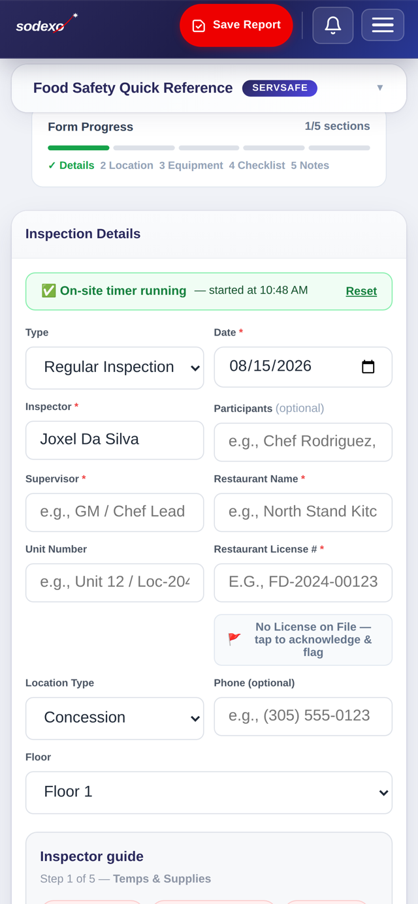
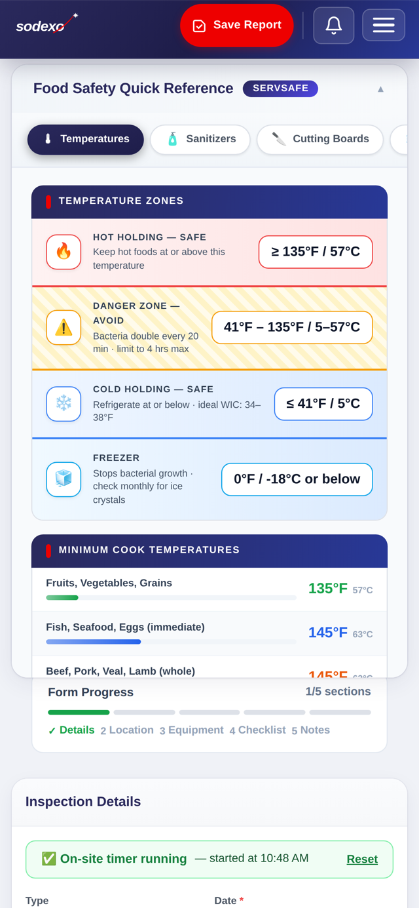
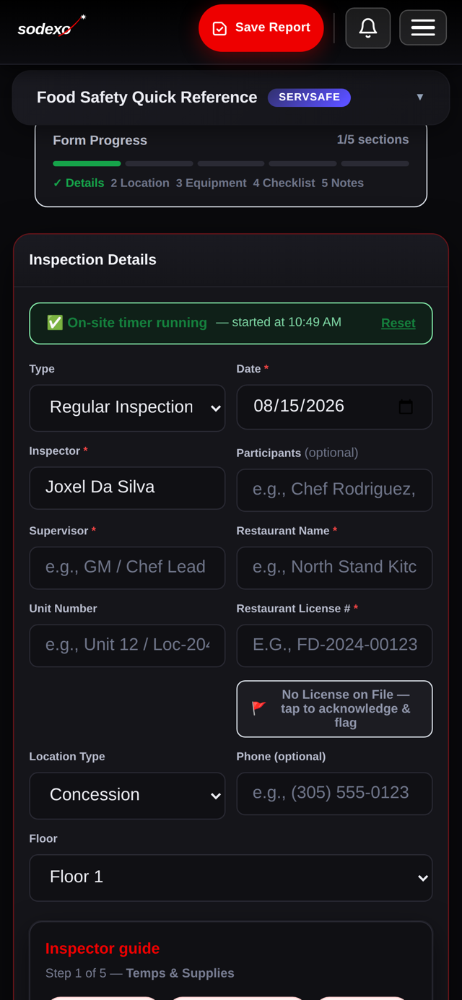

The all-in-one kitchen inspection & food safety compliance app. From walk-through to signed report in minutes — on iPhone, iPad, and the web.
Open the App How it worksReplace paper checklists and scattered spreadsheets with one fast, modern tool.
Facilities, equipment, utensils, hygiene, and operational compliance — every section guided, nothing missed.
Log cooler and freezer readings on the spot, with ServSafe reference temps always one tap away.
Generate clean, signature-ready reports the moment the walk-through ends.
Compliance scores, pass-rate trends, recurring issues, and follow-up reminders across every location.
Automatic checks against your official license list — mismatches surface themselves.
Every team member signs in with their work badge. Works offline; syncs when you reconnect.
Themes your team will actually enjoy using — including a full dark mode with customizable accent colors.



How a walk-through works in SDX Inspect — five steps, start to finish.
Tap in your work badge number — your name, role, and venue load instantly.
Start the inspection timer so floor time is tracked automatically for the report.
Facilities, equipment, temperatures, hygiene, operations — mark items, note violations, attach photos as you go.
A clean, professional PDF is generated on the spot, ready for signatures and filing.
The Performance Dashboard turns every inspection into trends, insights, recurring-issue alerts, and follow-up reminders.